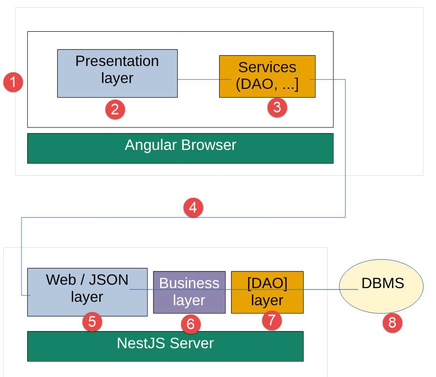

1. Einführung
Das PDF des Dokuments finden Sie |HIER|.
Den Code des Dokuments finden Sie |HIER|.
Dieses Dokument ist ein Produkt von Claude, der KI von Anthropic. Sein Ziel ist es, das Dokument [A Client/Server Example - AngularJS 1.x / Spring 4 ] in zweierlei Hinsicht zu übertragen:
- der Client AngularJS 1.x wird durch einen Client [Angular] 22 ersetzt;
- das Java-Web-Framework Spring MVC wird durch das Web-Framework NestJS ersetzt;
Claude von Anthropic (KI) hat den größten Teil der Arbeit erledigt (90 %):
- Codegenerierung: Claude hat den gesamten Code generiert. Ich habe ihn lediglich getestet, indem ich dem generierten Kurs gefolgt bin.
- Generierung des Kurses im ODT-Format: Claude hat auf meine Bitte hin mehrere Versionen erzeugt. Hier war ich hauptsächlich beteiligt.
Hinweis: Beim Lesen des von der KI Claude generierten Kurses ist mir aufgefallen, dass es viele Konzepte zu verstehen gibt. Wenn das Hauptziel des Lesers darin besteht, „NestJS zu lernen“, finden Sie ein einfacheres Beispiel im Dokument [Einführung in die Sprache TypeScript und das Web-Framework NestJS anhand von Beispielen (2026)]. Anschließend können Sie zu diesem Dokument zurückkehren, um das Angular-Framework auf der Clientseite zu verstehen.
Serge Tahé, September 2026
==
Dieses Dokument ist die Fortsetzung des Kurses „Ein Client-Server-Beispiel - AngularJS 1.x / Spring 4,“ aus dem Jahr 2014. Dieses ursprüngliche Dokument entwickelte eine kleine Anwendung zur Terminverwaltung einer Arztpraxis („[RdvMedecins]“) mit einem Spring-4- / Spring-Data- / Spring-MVC-Server und einem AngularJS-1.x-Client.
Zwölf Jahre später haben sich die beiden verwendeten Frameworks erheblich weiterentwickelt oder sind im allgemeinen Gebrauch sogar ersetzt worden:
- auf der Serverseite hat sich [NestJS] als eines der am weitesten verbreiteten Node.js-/TypeScript-Frameworks für den Aufbau strukturierter Webanwendungen etabliert, mit einer ähnlichen Philosophie wie Spring (Module, Controller, Services, Dependency Injection), jedoch im JavaScript-/TypeScript-Ökosystem;
- auf der Clientseite wurde AngularJS 1.x ab 2016 unter dem Namen [Angular] vollständig neu geschrieben (2, 4, 5 … bis zur in diesem Dokument verwendeten Version 22), mit einer komponentenbasierten Architektur und, in jüngerer Zeit, einem signalbasierten Reaktivitätssystem, das den Überwachungsmechanismus ($watch) von AngularJS 1.x ersetzt.
Ziel dieses Dokuments ist es, die ursprüngliche Fallstudie – dieselbe Anwendung, dieselben Funktionen, dieselbe Datenbank – erneut aufzugreifen und neu zu entwickeln, und zwar mit aktuellen Werkzeugen, wobei der didaktische Aufbau des Dokuments von 2014 so weit wie möglich beibehalten wird.
1.1. Ein Neuaufbau in Schritten
Das ursprüngliche Dokument umfasste rund 300 Seiten und behandelte neben den Kernfunktionen der Anwendung – rollenbasierte Authentifizierung (Spring Security) – zwölf aufeinander aufbauende Beispiele zum schrittweisen Erlernen von AngularJS 1.x. Diesen gesamten Inhalt auf einmal neu aufzubauen, wäre zeitaufwendig und schwer zu verdauen.
Dieses Dokument behandelt daher die ersten beiden Schritte des Neuaufbaus:
- die allgemeine Architektur der Anwendung (im Prinzip unverändert);
- die Datenbank (unverändert, abgesehen von der Ergänzung der Tabelle [users]);
- der vollständige [NestJS]-Server mit allen Funktionen zum Anzeigen, Buchen und Stornieren von Terminen;
- tokenbasierte Authentifizierung (JWT) und rollenbasierte Zugriffskontrolle (ADMIN/USER), das Äquivalent der Spring-Security-Schicht im ursprünglichen Dokument;
- der entsprechende [Angular]-Client mit denselben Funktionen, einem Anmeldebildschirm, einer Bootstrap-Oberfläche, die auf die Rolle des angemeldeten Benutzers zugeschnitten ist, und der Möglichkeit, die Oberfläche zwischen Französisch und Englisch umzuschalten ([@ngx-translate/core]).
Zwei Funktionen des ursprünglichen Dokuments sind in diesem Stadium ausgeklammert: der „Debug“-Modus des ursprünglichen Clients (Anzeige des rohen Templates der aktuellen View), der bei dieser Portierung bewusst weggelassen wurde (die Begründung dieser Entscheidung finden Sie in Kapitel 6), sowie die Konfiguration einer künstlichen Netzwerkverzögerung, die auf einen späteren Schritt verschoben wurde.
1.2. An wen sich dieses Dokument richtet
Dieses Dokument setzt keine Vorkenntnisse in [NestJS] oder Angular voraus. Jedes neue Konzept (Dekorator, Dependency Injection, Komponente, Signal usw.) wird beim ersten Auftreten so ausführlich wie möglich erklärt – auch für Leser, die noch nie eine einzige Zeile TypeScript geschrieben haben.
Einige Grundkenntnisse sind jedoch hilfreich, um dieses Dokument bestmöglich zu nutzen:
- ein grundlegendes Verständnis der Sprache JavaScript (Variablen, Funktionen, Arrays, Objekte);
- ein grundlegendes Verständnis der HTTP-Kommunikation in einer Webanwendung (Methoden GET/POST, JSON-Format);
- gängige Tags der Sprache HTML;
- die Nutzung der Kommandozeile (cd, npm install …).
Sie müssen die Sprache TypeScript (die sowohl auf der Server- als auch auf der Clientseite verwendet wird) nicht vorab kennen: Sie ist eine Obermenge von JavaScript, die ein Typsystem ergänzt, das im gesamten Dokument bei jeder Verwendung erklärt wird. Interessierte Leser können das Dokument [Introduction to the TypeScript language and the NestJS web framework through examples (2026)] zu Rate ziehen, das TypeScript ausführlich erläutert.
1.3. Die Architektur der Anwendung
Die allgemeine Architektur der Anwendung hat sich gegenüber dem ursprünglichen Dokument nicht geändert:
- ein Webserver liefert eine einzelne HTML-/CSS-/JS-Seite aus, die eine [Angular]-Anwendung enthält, die auf dem Modell der Komponenten (View + zugehörige Logik) aufbaut und sich zur Kommunikation mit dem Server auf Services stützt;
- der Benutzer interagiert mit den im Browser angezeigten Views. Die Aktionen des Benutzers erfordern mitunter eine Anfrage an den Server [NestJS], der die Anfrage verarbeitet und eine JSON-Antwort (JavaScript Object Notation) zurückgibt; diese Antwort dient dazu, die dem Benutzer präsentierte View zu aktualisieren.
Die betrachtete Anwendung hat die folgende Architektur:

- In [1] richtet der Benutzer der [Angular]-Anwendung seine Anfragen an die Schicht [presentation] und [2] dieser Anwendung;
- um die vom Benutzer gewünschte Aktion auszuführen, kann die Schicht [presentation] [2] die Schicht [Services] [3] abfragen;
- um den gewünschten Dienst zu erbringen, muss die Schicht [3] gegebenenfalls [4] abfragen, den entfernten JSON-Server, der von [NestJS] implementiert wird;
- Je nach der in [5] eingegangenen Anfrage werden gegebenenfalls die Schichten [6-8] abgefragt;
- die Antwort des Servers durchläuft die Schichten [2-8] in umgekehrter Reihenfolge;
- die dem Benutzer angezeigte View [1] spiegelt diese Antwort wider;
Hinweis: Wenn Sie die Architektur des Projekts verwirrt, ziehen Sie dieses Diagramm erneut zu Rate. Beachten Sie, dass das DBMS vom Server angesprochen wird, nicht vom Client.
1.4. Verwendete Werkzeuge
Dieses Dokument verwendet die folgenden Werkzeuge (ihre Installation wird in Kapitel 2 beschrieben):
- Node.js (ab Version 22) und sein Paketmanager npm – im JavaScript-Ökosystem das Äquivalent dessen, was Java + Maven für den ursprünglichen Spring-Server waren;
- Visual Studio Code, ein kostenloser Code-Editor mit seinen TypeScript-Erweiterungen – das Äquivalent zu Spring Tool Suite (STS) und WebStorm, die im ursprünglichen Dokument verwendet wurden;
- die CLI von [NestJS] ([@nestjs/cli]) und die CLI von [Angular] ([@angular/cli]), zwei Kommandozeilenwerkzeuge, die die Projektstruktur erzeugen und die Entwicklungsserver starten;
- [MySQL] 8 für die Datenbank (das ursprüngliche Dokument verwendete [MySQL] 5 – das relationale Schema selbst bleibt unverändert);
- Postman (oder ein anderer HTTP-Client), um die Antworten des Servers auf POST-Anfragen (/addAppointment, /deleteAppointment) zu testen – ein Browser kann nur GET-Anfragen testen.
1.5. Funktionen der Anwendung
Die „fachlichen“ Funktionen der Anwendung [RdvMedecins] bleiben gegenüber dem ursprünglichen Dokument unverändert; die Zugriffskontrolle ist jedoch etwas robuster als im Original (siehe die folgende Tabelle):
- Eine Arztpraxis beschäftigt mehrere Ärzte, jeder mit eigenen Sprechzeitfenstern;
- ein Benutzer muss sich anmelden (Benutzername/Passwort), um auf die Anwendung zuzugreifen;
- Nach der Anmeldung kann der Benutzer einen Arzt und einen Tag auswählen und den Terminkalender des Arztes für diesen Tag einsehen: Jedes Zeitfenster erscheint entweder als frei oder als gebucht;
- ein Benutzer mit der Rolle ADMIN kann außerdem ein freies Zeitfenster für einen Patienten seiner Wahl buchen und einen bestehenden Termin stornieren;
- ein Benutzer mit der Rolle USER kann die Terminkalender einsehen, aber weder buchen noch stornieren (nur Lesezugriff) – ein bewusster Unterschied zum ursprünglichen Dokument, in dem die Rolle USER lediglich dazu diente, eine Zugriffsverweigerung zu veranschaulichen, und überhaupt nichts einsehen konnte (die Begründung dieser Entscheidung finden Sie in Kapitel 3, Abschnitt „Authentifizierung“).

1.6. Was sich geändert hat und was nicht
Ursprüngliches Dokument (2014) | Dieses Dokument (2026) | |
[MySQL] 5, Tabellen MEDECINS/CLIENTS/CRENEAUX/RV | [MySQL] 8, dieselben Tabellen, dieselben Spalten, dieselben Constraints | |
Java, Spring 4, Spring Data (JPA/Hibernate), Spring MVC | TypeScript, [NestJS], [TypeORM], dieselben URLs (jetzt mit englischen Namen) | |
JavaScript, AngularJS 1.x, Bower | TypeScript, [Angular] 22 (Standalone-Komponenten, Signals), npm | |
Bootstrap 3 | Bootstrap 5 | |
Spring Security, HTTP Basic, Rollen in 3 Tabellen; nur ADMIN nutzt die Anwendung | Passport/JWT ([@nestjs/passport], [@nestjs/jwt]), ein signiertes Token, das mit jeder Anfrage übermittelt wird, Rollen in einer einzigen Spalte, ADMIN mit vollem Zugriff und USER mit Lesezugriff | |
Bibliothek angular-translate | [@ngx-translate/core] + [@ngx-translate/http-loader] |
1.7. Aufbau dieses Dokuments
- Einrichtung der Entwicklungsumgebung – Installation der Werkzeuge, Erstellung der Datenbank und erster Start von Server und Client.
- Einführung in [NestJS] – die Grundlagen des Frameworks (Module, Controller, Provider) mit einem Miniprojekt zum Einstieg.
- Der [NestJS]-Server der Anwendung [RdvMedecins] – die Datenbank, die [TypeORM]-Entitäten, die DAO-Schicht, die Geschäftsschicht, die Web-Schicht sowie die JWT-Token-Authentifizierung und die Rollen.
- Einführung in [Angular] – die Grundlagen des aktuellen Frameworks (Komponenten, Signals, Services und HTTP-Kommunikation).
- Der [Angular]-Client der Anwendung [RdvMedecins] – die Architektur des Clients, jede seiner Komponenten (einschließlich des Anmeldebildschirms), die Bootstrap-Oberfläche, das Umschalten der Oberfläche zwischen Französisch und Englisch und eine Schritt-für-Schritt-Vorführung der gesamten Anwendung.
- Fazit und nächste Schritte.